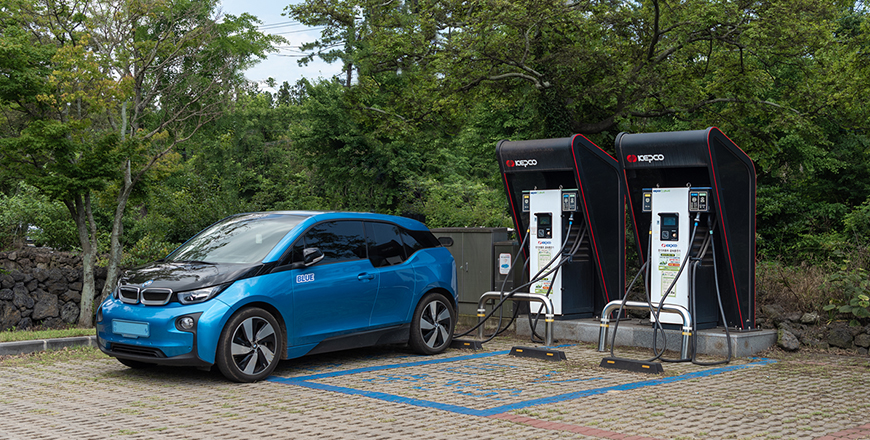

기획취재콘텐츠
- Home
- 제주라이프
- 기획취재콘텐츠
CFI 2030(Carbon Free Island 2030) 2部새로운 글


電気自動車のメッカ済州、規制自由特区指定で産業に弾みがつく

- 電気自動車充電スタンドで充電中の電気自動車 ⓒチェジュサンフェ ユン・ソジン -
済州道に電気自動車が初めて普及したのは2011年。当時環境部は「電気自動車先導都市」としてソウル、全羅南道霊光とともに済州道を選定し、道は2012年に「CFI2030計画」を発表した後、相次いで2015年には「電気自動車普及拡大及び産業育成のための中長期計画」を発表した。その結果、済州には韓国全体の電気自動車(89,918台)の20.2%に上る約18,178台の電気自動車が登録されており、道内の全運行車両に占める電気自動車の割合は4.69%に達する。全国基準0.38%に比べれば12倍を超える数値である(2019年12月末基準)。

※ 出所：’13～’19、済州特別自治道「データから見た電気自動車先導都市 済州」’20、済州道自動車登録現況、済州道庁交通政策課

※ 出所：国土交通部 統計ヌリ (2019年12月末基準)
このように普及率が高いのは、充電インフラなど派生産業生態系が造成されているという理由もあるが、道が推進中の多様な支援政策をまず見てみる必要がある。
2020年基準で済州道は電気自動車を購入する際、最大1,320万ウォン(乗用車)～2,500万ウォン(貨物自動車)の資金を支援し、電気自動車を購入する時に内燃機関車両を廃車又は道外に搬出する場合は廃車費用を最大200万ウォン支援する。なお、車両購入資金の支援を受けてもさらに低利の貸付まで受けられるよう銀行と協約を締結して専用の金融商品をつくるなど普及率を上げるための努力をしている。

※ 出所：国土交通部 統計ヌリ (2019年12月末基準)
電気自動車関連の産業生態系が強固な基盤を築いているという点も電気自動車の普及率が着実に増加している理由といえる。電気自動車産業が注目される理由は派生し得るビジネスの種類が多様であることにある。充電サービス、電気自動車メンテナンス、バッテリーの再利用、電気自動車の改造などが代表的な関連産業及び有望産業として挙げられるが、その中で最も明確な成果を見せているのが充電施設及びサービスである。首都圏を除けば電気自動車充電事業者数が最も多いのがほかならぬ済州道だ。メンテナンスサービスの場合、2020年から道と産業部がともに190億ウォンの予算を投入して韓国生産技術研究院に基盤を構築し、ここで確立された整備・メンテナンス技術は済州に真っ先に導入する計画だ。
また、済州道には全国唯一の電気自動車バッテリー産業化センターがある。2019年6月にオープンした電気自動車バッテリー産業化センターは回収したバッテリーの入庫から検査の進行、等級付与、廃棄出庫までの全過程をブロックチェーン技術を適用して管理する流通履歴管理システムを構築し、バッテリー性能評価基準の標準化基盤を築いた。これを通じて廃バッテリーの廃棄による環境汚染を減らし、今後、バッテリービックデータを通じて新産業ビジネスも発掘できるものとみられる。
- 電気自動車バッテリー産業化センターの全景, 電気自動車バッテリー産業化センターの内部 ⓒ済州テクノパークエネルギー融合センター提供 -
一方、多様な発展ビジネスモデルを有する済州自動車産業に弾みがつくきっかけが現れた。2019年11月済州道が電気自動車充電サービス規制自由特区に指定されたのである。今回の規制自由特区指定は電気自動車充電サービス分野で規制革新を通じた社会的費用を減らし、新産業を発掘することにその目的がある。267億ウォンの事業費を投入し、計15の事業者が参加して最低2年間行われる実証事業に選定された分野は、△充電時間短縮のための充電インフラ高度化の実証△占有スペースを最少化するための移動型充電サービスの実証△活用性増大のための充電インフラ・シェアリングプラットフォームの実証△充電データ基盤の簡易診断サービスの計4分野である。
これは近いうちに電気自動車充電器と関連した各種の規制が緩和され、移動型電気自動車充電器と個人所有の充電器をシェアリング又は収益化する事業が可能になるという意味である。今後、済州では携帯用充電器など充電施設の多様化のための開発が活発になり、より大容量の充電器の使用が可能になる上、個人所有の充電器を専門事業者に委託・共有して充電インフラとして活用し収益を得ることができるようになる。特に、充電器シェアリングサービスは世界的に輸出可能なプラットフォームだと評価されており、済州の電気自動車産業の世界化にも大きく役立つものと思われる。
- 電気自動車充電スタンドで充電中の電気自動車ⓒチェジュサンフェ ユン・ソジン -